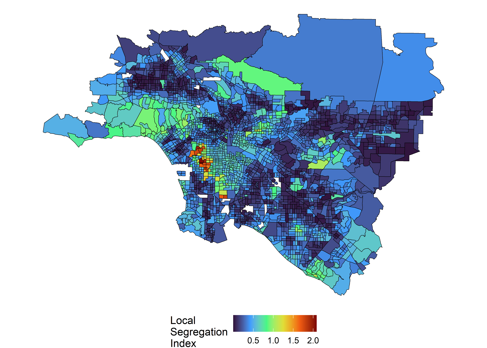
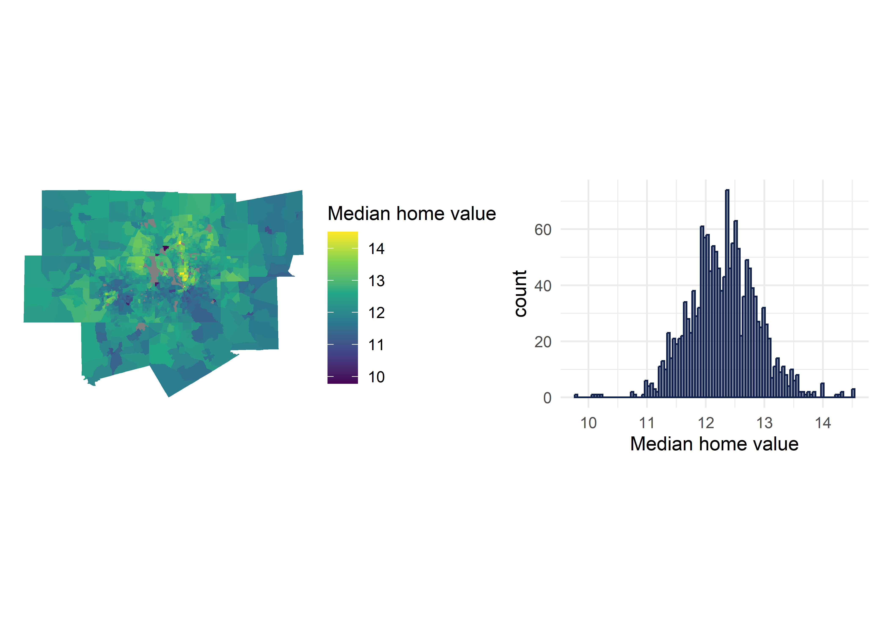

2023 Spatial Data Analysis
1 INTRODUCTION
The tidycensus packages offers a set of functions to retrieve census and American Community Survey data. Fortunately, the package offers a wide array of options for retrieving census data and American Community Survey via the Census API. We obtain the data through the get_acs function which contains geometry data for the American Community Survey (2015 - 2019) dataset.
It may be worthwhile to add an progress_bar = FALSE argument to a get_acs function call, especially, working within a RMarkdown or Quarto document. This way, one can avoid progress bar printing when the document is rendered.
1.1 EXPLORATORY ANALYSIS: DISSIMILARITY
With the spatial data in hand, we can explore the data more in-depth. Here, the segregation package offers a dissimilarity index function (conveniently named dissimilarity). The function returns a total segregation between a group and unit using the Index of Dissimilarity Elbers (2023) . Importantly, the dissimilarity index considers differences between two distinct groups. As the first step, we conduct dissimilarity between Hispanic and White residents in San Francisco–Oakland.
see code
stat est
1: D 0.5135526To add context on the dissimilarity index above, we can compare regional. Below, we split the data by urban name and apply the function across those groups and finally combine the outputs. The approach below is slightly different to that contained in the book. The book offers a more tidy and succinct method.
see code
Group_Wise <- split(ca_urban_data,ca_urban_data$urban_name)
Group_Wise <- lapply(Group_Wise,function(x){x |>
filter(variable %in% c("white","hispanic"))%>%
dissimilarity(group ="variable",
unit = "GEOID",
weight = "estimate")})
Group_Wise <- do.call(bind_rows,map2(Group_Wise,names(Group_Wise),function(x,y){
x |>
mutate(urban_name = y)
}))Across urban areas, Los Angeles –Long Beach, has the highest dissimilarity index at 0.599. The dissimilarity index ranges from 0 - 1 where 0 represents perfect integration between two groups and 1 represents complete segregation (Walker 2023, 215). The table below provides some context compared to our earlier dissimilarity index value for San Francisco-Oakland.
see code
| urban_name | stat | est |
|---|---|---|
| Los Angeles--Long Beach--Anaheim, CA Urbanized Area (2010) | D | 0.5999229 |
| San Francisco--Oakland, CA Urbanized Area (2010) | D | 0.5135526 |
| San Jose, CA Urbanized Area (2010) | D | 0.4935633 |
| San Diego, CA Urbanized Area (2010) | D | 0.4898184 |
| Riverside--San Bernardino, CA Urbanized Area (2010) | D | 0.4079863 |
| Sacramento, CA Urbanized Area (2010) | D | 0.3687927 |
Among the urban areas Los Angeles and San Francisco are the most segregated areas among Hispanic and White residents. While, San-Bernardino and Sacramento had the least among of segregation. We can expand on the dissimilarity index by considering more than two groups. Again, we rely on the segregation package’s implementation of the Mutual Information Index and Theil’s Entropy Index. The latter indices measure diversity and segregation across multiple groups (Walker 2023, 217) in California urban areas.
see code
mutual_within(data = ca_urban_data,
group = "variable",
unit = "GEOID",
weight = "estimate",
within = "urban_name",
wide = TRUE) |>
arrange(desc(H)) |>
gt() |>
cols_label(
urban_name = "URBAN NAME",
M = "M Index (M)",
H = "H Index (H)",
p = "Proportion of the category (p)",
ent_ratio = "Entropy Ratio"
) |>
gt_theme_espn()| URBAN NAME | M Index (M) | Proportion of the category (p) | H Index (H) | Entropy Ratio |
|---|---|---|---|---|
| Los Angeles--Long Beach--Anaheim, CA Urbanized Area (2010) | 0.3391033 | 0.50163709 | 0.2851662 | 0.9693226 |
| San Francisco--Oakland, CA Urbanized Area (2010) | 0.2685992 | 0.13945223 | 0.2116127 | 1.0346590 |
| San Diego, CA Urbanized Area (2010) | 0.2290891 | 0.12560720 | 0.2025728 | 0.9218445 |
| San Jose, CA Urbanized Area (2010) | 0.2147445 | 0.07282785 | 0.1829190 | 0.9569681 |
| Sacramento, CA Urbanized Area (2010) | 0.1658898 | 0.07369482 | 0.1426804 | 0.9477412 |
| Riverside--San Bernardino, CA Urbanized Area (2010) | 0.1497129 | 0.08678082 | 0.1408461 | 0.8664604 |
The results of the multi-group dissimilarity index are largely similar with Los Angeles remaining the most segregated urban area in California. Los Angeles is large area, hence, it may be worthwhile to extend to local analysis. Local analysis is a more granular approach to understanding the differences.
see code
la_local_seg <- ca_urban_data %>%
filter(str_detect(urban_name,"Los Angeles")) %>%
mutual_local(
group = "variable",
unit = "GEOID",
weight = "estimate",
wide = TRUE
)
la_tracts_seg <- tracts("CA", cb = TRUE, year=2019) %>%
inner_join(la_local_seg, by = "GEOID")
la_tracts_seg %>%
ggplot(aes(fill = ls)) +
geom_sf(color = "black") +
coord_sf(crs = 26946) +
scale_fill_viridis_c(option = "turbo") +
theme_void() +
labs(fill = "Local\nSegregation\nIndex")+
theme(legend.position = "bottom")
2 REGRESSION MODELLING
We proceed to modelling on the dataset, although our area of interest changes to Dallas-Forth Worth metropolitan area. A good starting point would be fitting an Ordinary Least Squares (OLS) model. (Walker 2023, 221) highlights a few glaring issues with this approach, namely: Collinearity and Spatial Autocorrelation. Collinearity is likely to emerge from the highly correlated of census data; Spatial Autocorrelation may occur since spatial coordinates are not necessary statistically independent. Recall, the above mentioned features violate some OLS assumptions. There methods are several methods to handle Collinearity, think Principal Component Analysis, Partial Least Squares and other Dimension Reduction techniques. We can also employ a number of test for autocorrelation, later in the post. The remainder of the section will be as follows: i) Data Collection, ii) Data Visualisation and iii) Feature Engineering and iv) Spatial Regression.
The code snippet below contains the counties of interest along with the variables to used, data transformation to the appropriate coordinate reference system and data visualisation. Coordinate Reference Systems like Dates are a special type of data (read Rabbit-Hole), (Walker 2023, 109) and (Lovelace, Nowosad, and Münchow 2019, 41: 43) provides a decent introduction and R methods for working with coordinate reference systems. As a result, we don’t adjust the code in any form.
see code
library(sf)
library(units)
library(patchwork)
dfw_counties <- c("Collin County", "Dallas", "Denton",
"Ellis", "Hunt", "Kaufman", "Rockwall",
"Johnson", "Parker", "Tarrant", "Wise")
variables_to_get <- c(
median_value = "B25077_001",
median_rooms = "B25018_001",
median_income = "DP03_0062",
total_population = "B01003_001",
median_age = "B01002_001",
pct_college = "DP02_0068P",
pct_foreign_born = "DP02_0094P",
pct_white = "DP05_0077P",
median_year_built = "B25037_001",
percent_ooh = "DP04_0046P"
)
dfw_data <- get_acs(
geography = "tract",
variables = variables_to_get,
state = "TX",
county = dfw_counties,
geometry = TRUE,
output = "wide",
year = 2020,
progress_bar = FALSE
) %>%
select(-NAME) %>%
st_transform(32138)
library(tidyverse)
library(patchwork)
mhv_map <- ggplot(dfw_data, aes(fill = log(median_valueE))) +
geom_sf(color = NA) +
scale_fill_viridis_c() +
theme_void() +
labs(fill = "Median home value ")
mhv_histogram <- ggplot(dfw_data, aes(x = log(median_valueE))) +
geom_histogram(alpha = 0.5, fill = "#0f204b", color = "#0f204b",
bins = 100) +
theme_minimal() +
scale_x_continuous(labels = scales::label_number_si(accuracy = 1)) +
labs(x = "Median home value")
mhv_map + mhv_histogram
We have explored our outcome variable. The next step is a bit of data processing. Firstly, we create a population density across a standard unit of \(1/km^2\). Secondly, we derive a median age of the structure by deducting the 2018. Thirdly, we remove variables ending with M and clean variable names ending with capital letter E. Finally, we fit an OLS model and store the residuals of the model into our Dataframe. The residuals will be used in the spatial regression models down the line.
see code
dfw_data_for_model <- dfw_data %>%
mutate(
pop_density = as.numeric(set_units(total_populationE /st_area(.),"1/km2")),
median_structure_age = 2018 - median_year_builtE) %>%
select(!ends_with("M")) %>%
rename_with(.fn = ~str_remove(.x, "E$")) %>%
na.omit()
formula2 <- paste0("log(median_value) ~median_rooms+pct_college+",
"pct_foreign_born +pct_white+median_age+",
"median_structure_age +percent_ooh+pop_density+",
"total_population")
model2 <- lm(formula2,data=dfw_data_for_model)
dfw_data_for_model$residuals <- model2$residualsThe Moran’s I sums the deviation of values at given distance lag from the mean variable (Fortin and Dale 2009, 93) . We can use the test for spatial autocorrelation to determine whether nearby locations affect one other. Effectively, we test a null hypothesis that nearby locations do not affect each other, i.e. they are independent and spatially random. Below, we find positive spatial autocorrelation on the residuals, a violation of the assumption model independence (Walker 2023, 236).
see code
Moran I test under randomisation
data: dfw_data_for_model$residuals
weights: wts
Moran I statistic standard deviate = 14.029, p-value < 2.2e-16
alternative hypothesis: greater
sample estimates:
Moran I statistic Expectation Variance
0.2102864510 -0.0006418485 0.0002260480 To expand the analysis, we fit a spatial lag model using the spatialreg package. The authors of the package have also written a a review of software for spatial econometrics (R. Bivand, Millo, and Piras 2021), they provide an overview of the spatial modelling approaches in R, among others including spatial panel models, cross-sectional models, spatial lagged and spatial error models. Below, we fit a spatial lag model utilising the previously created spatial weights.
summary(model2)
Call:
lm(formula = formula2, data = dfw_data_for_model)
Residuals:
Min 1Q Median 3Q Max
-1.91754 -0.15319 -0.00224 0.16192 1.58949
Coefficients:
Estimate Std. Error t value Pr(>|t|)
(Intercept) 1.101e+01 6.202e-02 177.569 < 2e-16 ***
median_rooms 7.326e-02 9.497e-03 7.713 2.18e-14 ***
pct_college 1.775e-02 4.862e-04 36.506 < 2e-16 ***
pct_foreign_born 4.170e-03 8.284e-04 5.034 5.37e-07 ***
pct_white 4.995e-03 4.862e-04 10.274 < 2e-16 ***
median_age 3.527e-03 1.429e-03 2.468 0.0137 *
median_structure_age 2.832e-05 2.696e-05 1.050 0.2937
percent_ooh -3.888e-03 5.798e-04 -6.705 2.81e-11 ***
pop_density -5.479e-06 6.425e-06 -0.853 0.3940
total_population 9.711e-06 4.658e-06 2.085 0.0373 *
---
Signif. codes: 0 '***' 0.001 '**' 0.01 '*' 0.05 '.' 0.1 ' ' 1
Residual standard error: 0.2815 on 1549 degrees of freedom
Multiple R-squared: 0.7618, Adjusted R-squared: 0.7604
F-statistic: 550.4 on 9 and 1549 DF, p-value: < 2.2e-16library(spatialreg)
library(gtsummary)
lag_model <- lagsarlm(
formula = formula2,
data = dfw_data_for_model,
listw= wts
)
summary(lag_model,Nagelkerke=TRUE)
Call:lagsarlm(formula = formula2, data = dfw_data_for_model, listw = wts)
Residuals:
Min 1Q Median 3Q Max
-2.0648791 -0.1377778 -0.0032625 0.1386678 1.4820330
Type: lag
Coefficients: (asymptotic standard errors)
Estimate Std. Error z value Pr(>|z|)
(Intercept) 7.0166e+00 2.6893e-01 26.0903 < 2.2e-16
median_rooms 6.2047e-02 8.8546e-03 7.0073 2.430e-12
pct_college 1.2855e-02 5.4694e-04 23.5029 < 2.2e-16
pct_foreign_born 2.0090e-03 7.7474e-04 2.5931 0.009512
pct_white 2.7088e-03 4.7175e-04 5.7419 9.360e-09
median_age 3.4397e-03 1.3162e-03 2.6134 0.008963
median_structure_age 2.6116e-05 2.4824e-05 1.0521 0.292774
percent_ooh -3.0439e-03 5.4311e-04 -5.6047 2.086e-08
pop_density -1.3586e-05 5.9274e-06 -2.2920 0.021903
total_population 8.3743e-06 4.2924e-06 1.9509 0.051063
Rho: 0.35337, LR test value: 211.1, p-value: < 2.22e-16
Asymptotic standard error: 0.023371
z-value: 15.12, p-value: < 2.22e-16
Wald statistic: 228.6, p-value: < 2.22e-16
Log likelihood: -125.1649 for lag model
ML residual variance (sigma squared): 0.067166, (sigma: 0.25916)
Nagelkerke pseudo-R-squared: 0.79196
Number of observations: 1559
Number of parameters estimated: 12
AIC: 274.33, (AIC for lm: 483.43)
LM test for residual autocorrelation
test value: 6.9518, p-value: 0.0083735error_model <- errorsarlm(formula = formula2,
data = dfw_data_for_model,
listw = wts)
summary(error_model, Nagelkerke = TRUE)
Call:errorsarlm(formula = formula2, data = dfw_data_for_model, listw = wts)
Residuals:
Min 1Q Median 3Q Max
-1.98019809 -0.13647987 -0.00063398 0.13920144 1.54919789
Type: error
Coefficients: (asymptotic standard errors)
Estimate Std. Error z value Pr(>|z|)
(Intercept) 1.1098e+01 6.6706e-02 166.3776 < 2.2e-16
median_rooms 8.2887e-02 9.7087e-03 8.5374 < 2.2e-16
pct_college 1.5854e-02 5.7434e-04 27.6036 < 2.2e-16
pct_foreign_born 3.6574e-03 9.6573e-04 3.7872 0.0001524
pct_white 4.6690e-03 6.1194e-04 7.6299 2.354e-14
median_age 3.9385e-03 1.4128e-03 2.7877 0.0053077
median_structure_age 2.6047e-05 2.5445e-05 1.0237 0.3059955
percent_ooh -4.7598e-03 5.6731e-04 -8.3902 < 2.2e-16
pop_density -1.5068e-05 6.8677e-06 -2.1940 0.0282326
total_population 1.0542e-05 4.4656e-06 2.3608 0.0182379
Lambda: 0.46811, LR test value: 164.44, p-value: < 2.22e-16
Asymptotic standard error: 0.031982
z-value: 14.637, p-value: < 2.22e-16
Wald statistic: 214.23, p-value: < 2.22e-16
Log likelihood: -148.4983 for error model
ML residual variance (sigma squared): 0.06786, (sigma: 0.2605)
Nagelkerke pseudo-R-squared: 0.78564
Number of observations: 1559
Number of parameters estimated: 12
AIC: 321, (AIC for lm: 483.43)Unlike the OLS model, the spatial lag model accounts for spatial spillover effects. We can find these differences by considering the model parameters, in addition, the spatial lag model contains a pseudo-R-square which can serve as a comparison with the OLS model’s R-square value. Importantly, the spatial error model considers spatial lag in the model’s error term. Both the spatial lag and spatial error models are crucial for accounting for spatial autocorrelation. Selecting the appropriate model depends on the type of analysis conducted (Walker 2023, 239). We can also rely on the Moran’s I to compare spatial dependence in our models, in our case, the spatial error model outperforms the rest.
see code
$lag_resid
Moran I test under randomisation
data: x
weights: wts
Moran I statistic standard deviate = 2.0478, p-value = 0.02029
alternative hypothesis: greater
sample estimates:
Moran I statistic Expectation Variance
0.0301318175 -0.0006418485 0.0002258242
$error_resid
Moran I test under randomisation
data: x
weights: wts
Moran I statistic standard deviate = -1.6147, p-value = 0.9468
alternative hypothesis: greater
sample estimates:
Moran I statistic Expectation Variance
-0.0249075353 -0.0006418485 0.0002258341 3 CONCLUSION
In this post, we set out to try and understand the process of modelling spatial data. Fortunately, (Walker 2023) provides a detailed book on this topic. The book and the code contained are fantastic resources for a novice like myself. The book is freely available online. R. S. Bivand, Pebesma, and Gómez-Rubio (2013), Schabenberger and Gotway (2017), Lovelace, Nowosad, and Münchow (2019), Oyana (2021) and Pebesma and Bivand (2023) among others offer R titles in Spatial Analysis. The titles offer a good blend of theory and practical application.